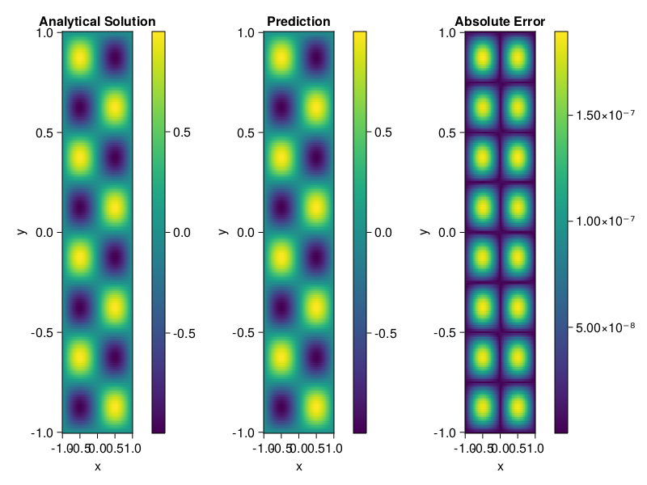

Helmholtz equation
Let us consider the Helmholtz equation in two space dimensions
\[\begin{aligned} &\Delta u(x, y)+k^{2} u(x, y)=q(x, y), \quad(x, y) \in \Omega:=(-1,1)^2 \\ &u(x, y)=0, \quad(x, y) \in \partial \Omega \end{aligned}\]
where
\[q(x, y)=-\left(a_{1} \pi\right)^{2} \sin \left(a_{1} \pi x\right) \sin \left(a_{2} \pi y\right)-\left(a_{2} \pi\right)^{2} \sin \left(a_{1} \pi x\right) \sin \left(a_{2} \pi y\right)+k^{2} \sin \left(a_{1} \pi x\right) \sin \left(a_{2} \pi y\right).\]
The excat solution is $u(x,y)=\sin{a_1\pi x}\sin{a_2\pi y}$. We chose $k=1, a_1 = 1$ and $a_2 = 4$.
using ModelingToolkit, IntervalSets, Sophon, Lux
using Optimization, OptimizationOptimJL
@parameters x,y
@variables u(..)
Dxx = Differential(x)^2
Dyy = Differential(y)^2
a1 = 1
a2 = 4
k = 1
q(x,y) = -(a1*π)^2 * sin(a1*π*x) * sin(a2*π*y) - (a2*π)^2 * sin(a1*π*x) * sin(a2*π*y) + k^2 * sin(a1*π*x) * sin(a2*π*y)
eq = Dxx(u(x,y)) + Dyy(u(x,y)) + k^2 * u(x,y) ~ q(x,y)
domains = [x ∈ Interval(-1,1), y ∈ Interval(-1,1)]
bcs = [u(-1,y) ~ 0, u(1,y) ~ 0, u(x, -1) ~ 0, u(x, 1) ~ 0]
@named helmholtz = PDESystem(eq, bcs, domains, [x,y], [u(x,y)])\[ \begin{align} \frac{\mathrm{d}}{\mathrm{d}y} \frac{\mathrm{d}}{\mathrm{d}y} u\left( x, y \right) + \frac{\mathrm{d}}{\mathrm{d}x} \frac{\mathrm{d}}{\mathrm{d}x} u\left( x, y \right) + u\left( x, y \right) =& - 166.78 \sin\left( 3.1416 x \right) \sin\left( 12.566 y \right) \end{align} \]
Note that the boundary conditions are compatible with periocity, which allows us to apply BACON.
chain = BACON(2, 1, 5, 2; hidden_dims = 32, num_layers=5)
pinn = PINN(chain) # call `gpu` on it if you want to use gpu
sampler = QuasiRandomSampler(300, 100)
strategy = NonAdaptiveTraining()
prob = Sophon.discretize(helmholtz, pinn, sampler, strategy)
@time res = Optimization.solve(prob, BFGS(); maxiters=1000)u: ComponentVector{Float64}(filters = (filter_1 = (bias = [-0.46094999780785423; 0.46906359229687505; … ; 0.030748727060123264; -0.8520147712059344;;]), filter_2 = (bias = [-0.9480017131737499; 0.0711774567868342; … ; 0.3087348076375221; -0.6376436119861122;;]), filter_3 = (bias = [-0.01361774288694938; 0.4792980567119829; … ; -0.012468001825468181; -0.24466416337654007;;]), filter_4 = (bias = [-0.07870949372067082; -0.05815942268053177; … ; 0.37366369293411106; 0.6055901025005208;;]), filter_5 = (bias = [0.8554515568786382; 0.29970409573913337; … ; -0.517452310650183; -0.6323558997680879;;])), linear_layers = (layer_1 = (weight = [-0.27356740493199927 -0.13796183273120372 … -0.03375017662727374 -0.3542933294998646; -0.18786421046485108 -0.03629176423033058 … -0.04579060012709433 0.11208808007915069; … ; 0.14568882594180319 0.3839763465562682 … 0.2895023976742717 -0.24165693745773623; -0.3821417864864943 -0.3450694120976484 … 0.14711460633508106 -0.20495409211359733], bias = [0.0695470758026468; -0.05001643239349102; … ; -0.054882231032659795; -0.014895816273989325;;]), layer_2 = (weight = [-0.36305650517139404 0.25588823629876273 … -0.3745741392642008 0.029156026754799797; 0.16425012705256373 0.021745136261037967 … 0.2618432385107361 0.3968750336409881; … ; -0.04588881093696743 0.2729964063387682 … 0.11134043170846132 -0.05898001418300068; -0.38410094216287016 -0.3561398747118266 … 0.047948604161975175 0.42195265410432264], bias = [0.01871177397135573; -0.0006904731271910703; … ; -0.019138299542814433; -0.005261404859593242;;]), layer_3 = (weight = [0.07550091279821831 -0.360477043875312 … 0.38347993046227397 0.3568063788448317; 0.36598627479306156 -0.07779654665325235 … -0.06605398705464968 0.11334744460304594; … ; -0.3174199742690446 -0.2804238340556128 … 0.3835191112003582 -0.2638002794552495; -0.2676933575356743 -0.1923840892184314 … -0.13214499200641056 -0.04108481677043798], bias = [0.009954615157568153; -0.023384084117163712; … ; -0.01077799912358938; -0.005392247682499834;;]), layer_4 = (weight = [-0.4044379480584251 -0.22536887264845903 … 0.13821748227241232 -0.10135595708536063; 0.08597117442077101 0.27833532157954566 … -0.35165395935510557 0.259664422838894; … ; 0.1278011018181192 -0.02391953135137441 … -0.028133713483989062 -0.3429013502454732; -0.13197397137886682 0.35044098908814647 … -0.3142997592826772 -0.08263842863380297], bias = [-0.00196412587896628; 0.015421185781558147; … ; -0.004466358851458345; 0.005001959655797178;;])), output_layer = (weight = [-0.03578357534016868 -0.3557711792914378 … -0.18331246005071292 0.1485305250756777], bias = [-0.007573932881246804;;]))Let's plot the result.
phi = pinn.phi
xs, ys= [infimum(d.domain):0.01:supremum(d.domain) for d in domains]
u_analytic(x,y) = sinpi(a1*x)*sinpi(a2*y)
u_real = [u_analytic(x,y) for x in xs, y in ys]
phi_cpu = cpu(phi) # in case you are using GPU
ps_cpu = cpu(res.u)
u_pred = [sum(phi_cpu(([x,y]), ps_cpu)) for x in xs, y in ys]
using CairoMakie
axis = (xlabel="x", ylabel="y", title="Analytical Solution")
fig, ax1, hm1 = heatmap(xs, ys, u_real, axis=axis)
Colorbar(fig[:, end+1], hm1)
ax2, hm2= heatmap(fig[1, end+1], xs, ys, u_pred, axis= merge(axis, (;title = "Prediction")))
Colorbar(fig[:, end+1], hm2)
ax3, hm3 = heatmap(fig[1, end+1], xs, ys, abs.(u_pred-u_real), axis= merge(axis, (;title = "Absolute Error")))
Colorbar(fig[:, end+1], hm3)
fig